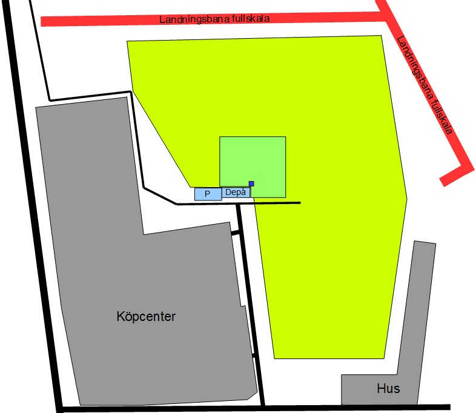
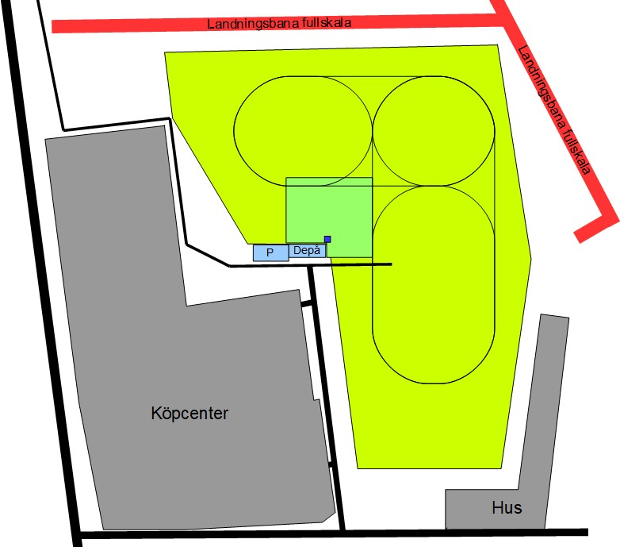
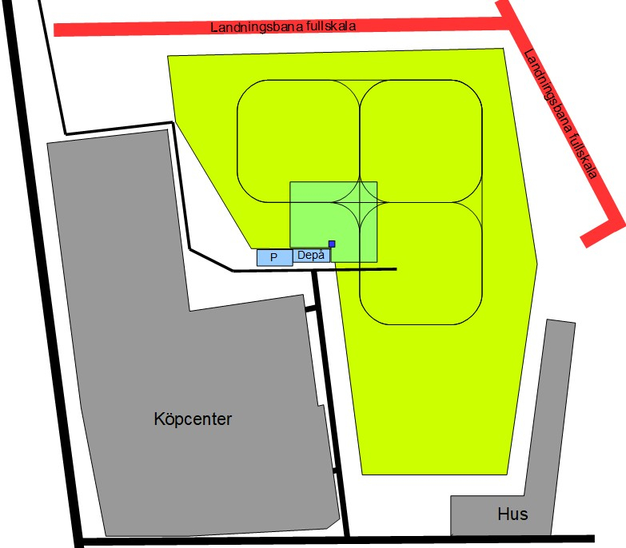

Eslövs modellflygklubb - Flygområde
Gå tillbakaSteg 0 - Prova på - Flygområde
- Finns inga rutter men man skall hålla sig inom godkänt område.
- Flyger enbart med höger spak, gas fixerad.
- Lära sig både höger- och vänster-sväng.
- Lära sig stiga och sjunka lugnt kontrollerat (efter och före sväng).

Steg 1 - Orientering relaterat till marken
- Alla flygriktningar rakt mot fältet/marken.
- Gör stora 180-graderssvängar och håll avstånd till pilotrutan.
- Korrigera höjden efter svängen i början av utbildningen, och längre fram korrigeras höjden under svängen.
- Justerar gas i svängar och när man stiger och sjunker.

Steg 2 - Snävare svängar och närmre
- Målet är att komma in över start- och landningsområdet samt pilotrutan.
- Träna på 90-graderssvängar med bibehållen höjd. Med tiden kan svängarna göras allt snävare.
- Korrigera sidroder under svängarna.
